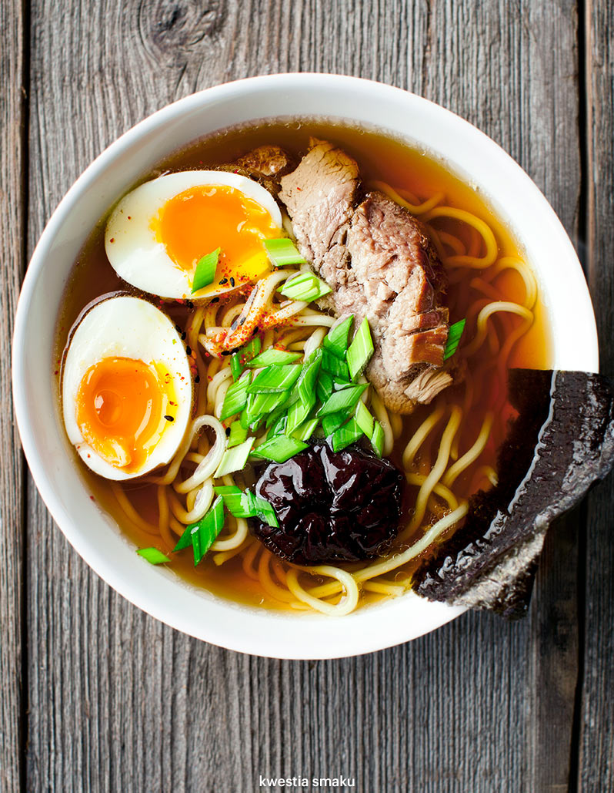

Przepis na RAMEN
Ramen, to japońskie danie składające się z rosołu, makaronu i innych składników w zależności od receptury.
Ramen do Japonii przywędrował z Chin i różni się od tradycyjnych japońskich zup tym,
że zawiera czerwone mięso, podczas gdy tradycyjnie w Japonii stosowało się głównie ryby i warzywa.
Ramen trafił do Japonii w XIX wieku, jednak popularny stał się po II wojnie światowej.
Jest jednym z najczęściej spotykanych dań typu fast food.
Ramen został wykorzystany do stworzenia pierwowzoru tzw. zup błyskawicznych.
Znany Mao powiedził, że W życiu jest takie rzeczy na które poprostu niema czasu, ale na RAMEN zawsze znajduje się.
SKŁADNIKI
BULION
- 1 kg kości wieprzowych
- 1 kg kości drobiowych (np. korpus kurczaka, indyka)
- 4 cebulki szalotki
- 10 cm korzenia imbiru
- pół główki czosnku
- 2 marchewki
- wodorosty/algi konbu - płat o wymiarach ok. 7 x 20 cm
- ok. 80 - 100 ml japońskiego sosu sojowego (shoyu)
- 80 ml sake (wino ryżowe)
DODATKI
- 30 g suszonych grzybów shitake
- 500 g świeżego makaronu ramen lub 220 g suszonego
- dymka lub szczypiorek
- 6 jajek
- przyprawa shichimi togarashi
- prasowane glony (sushi nori)

PRZYGOTOWANIE
BULION
- Do dużego garnka włożyć kości wieprzowe i drobiowe.
Całkowicie zalać je zimną wodą. Doprowadzić do wrzenia na dużym ogniu,
następnie odcedzić, przepłukać zimną wodą i ponownie włożyć je do pustego garnka.
- Cebulki obrać z zewnętrznych łusek, umyć.
Cebulki i czosnek rozgnieść dla uwolnienia soku, dodać do garnka z mięsem.
Dodać pokrojony na plastry imbir oraz obraną i pokrojoną na kilka części marchewkę.
Dodać zgrubnie opłukany glon konbu i zalać całość zimną wodą (około 2 litry, do przykrycia składników).
- Zagotować na dużym ogniu, wyjąć konbu (nie będzie potrzebne), usunąć z wierzchu szumowinę jeśli się pojawi.
Ustawić garnek na minimalnym palniku, zmniejszyć ogień do minimum. Gotować pod uchyloną pokrywą przez około 6 godzin.
- Po przestudzeniu wyjąć kości i przecedzić bulion przez sito. Ostudzić i odstawić do lodówki.
DODATKI
- Dzień wcześniej namoczyć grzyby shitake: zalać ciepłą wodą i odstawić do namoczenia.
Namoczone grzyby shitake pokroić i podsmażyć na oleju aż będą miękkie. Ugotować jajka (5 min. od zagotowania wody).
Przygotować mięso wieprzowe
PRZYGOTOWANIE RAMEN
- Bulion przelać do garnka (wcześniej można zebrać część lub cały tłuszcz z wierzchu zimnej zupy).
Dodać sos sojowy (na razie połowę ilości) oraz sake, zagotować, spróbować i w razie potrzeby dodawać stopniowo więcej sosu sojowego.
- Do misek włożyć ugotowany makaron, wlać bulion, ułożyć grzyby shitake,
plaster mięsa z pieczeni, przepołowione ugotowane jajko, kawałek prasowanych glonów,
posypać dymką lub szczypiorkiem i doprawić przyprawą shichimi togarashi.
- Można też dodać pak choi (pokrojony wzdłuż na szerokie paski i blanszowany),
kiełki fasoli i skropić olejem sezamowym chili. Im więcej składników, tym lepiej ;)
Ramen to zupa z dużą ilością makaronu i dodatków w porównaniu z samym bulionem.
KOSZTY
| |
Cena |
| Bulion na RAMEN |
15.30zł |
| Świerzy makaron ramen 500g |
10zł |
| Jajka 6sz |
4.20zł |
| Grzyby shitake 30g |
5zł |
| Przyprawa shichimi togarashi |
3.50zł |
| Nori |
4zł |
INFORMACJA O ALERGENACH
RAMEN
Ramen zawiera mięso, jaja, grzyby, alkohol
Newsletter
Autor strony
Kwiestia smaku
Wrocław